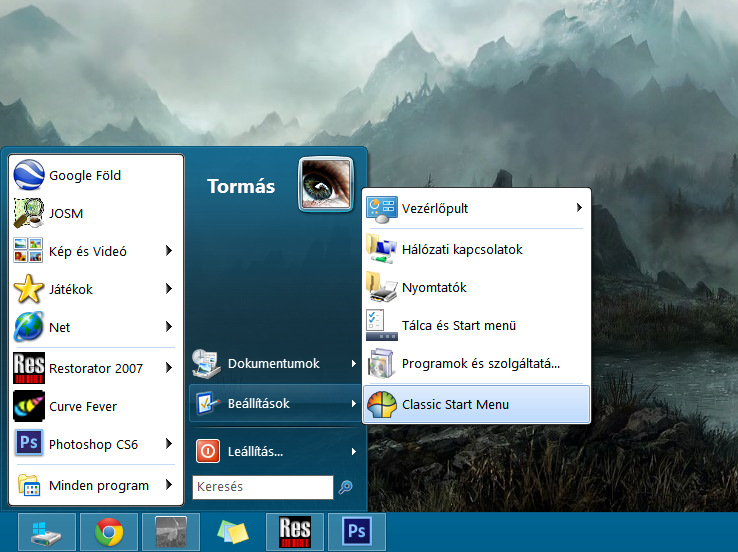
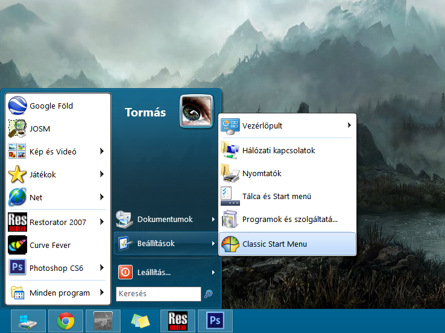

Maybe the next release could include this if it's better than the standard white cube?
| Attachments: |
|
Downloaded 944 times |
| Classic Shell http://www.classicshell.net/forum/ |
|
| Windows Aero skin with modded submenu to match Aero style http://www.classicshell.net/forum/viewtopic.php?f=17&t=125 |
Page 1 of 1 |
| Author: | skyli [ Tue Jan 22, 2013 5:47 am ] | ||
| Post subject: | Windows Aero skin with modded submenu to match Aero style | ||
 Maybe the next release could include this if it's better than the standard white cube?
|
|||
| Author: | Jcee [ Tue Jan 22, 2013 7:06 am ] |
| Post subject: | Re: Windows Aero skin with modded submenu to match Aero styl |
i dont see how the posted skin differs from the one with classic shell, maybe highlight or circle what part your talking about?, unless someone else gets it EDIT Nvm he means the corners on Submenu_bitmap |
|
| Author: | skyli [ Tue Jan 22, 2013 7:27 am ] |
| Post subject: | Re: Windows Aero skin with modded submenu to match Aero styl |
yes |
|
| Page 1 of 1 | All times are UTC - 8 hours [ DST ] |
| Powered by phpBB® Forum Software © phpBB Group https://www.phpbb.com/ |
|